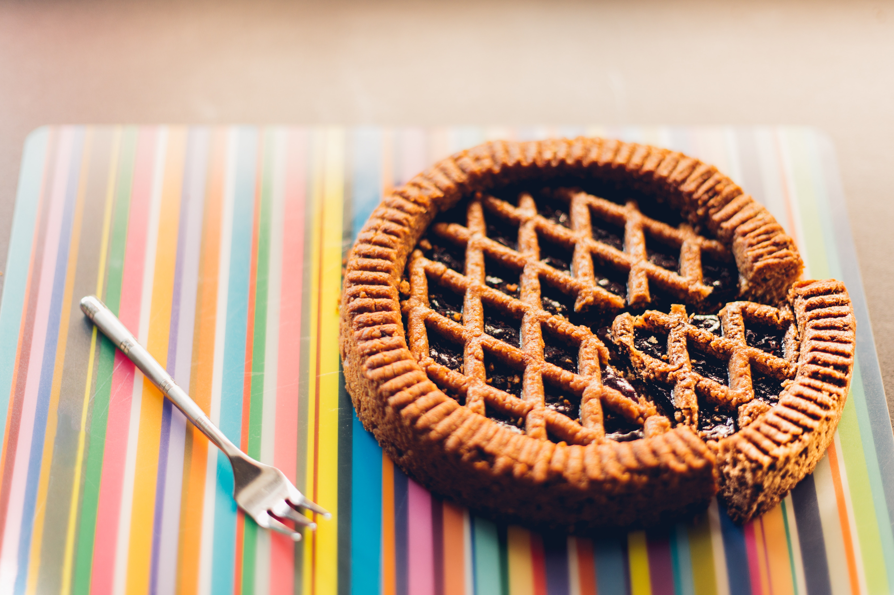

Grape Pie

Grape pie is a deliciously juicy, sweet, and tart pie. It has a beautiful, rich purple color and the texture is similar to blueberry pie. It’s the perfect pie to enjoy when grapes are freshly picked in season, which is usually late summer to early fall. But you can enjoy this pie anytime of year.
Using seedless grapes makes preparing his pie much easier. However, we have included instructions for how to make the pie with seeded grapes as well. Seeded concord grapes are often a bit tarter and have a stronger grape flavor for an especially tasty pie.
Ingredients
For the Filling
- 8 cups concord grapes (seedless, if available; washed and shaken dry)
- 1 cup granulated sugar
- 1/4 cup cornstarch
- 2 teaspoons lemon juice
- 1 teaspoon lemon zest
- 1/2 teaspoon vanilla extract
- 1/4 teaspoon salt
For the Pie
- 2 1/2 cups flour
- 1/3 cup shortening (chilled)
- 1/3 cup butter (chilled)
- 1/2 teaspoon salt
- 1/4 cup cold water
Steps to Make It
-
Gather the ingredients. Preheat the oven to 400 F.
-
Using a pastry blender, combine the flour, shortening, butter, and salt in a large bowl. Work the fat into the flour until you have pea-sized pieces of fat.
-
Add the water a few teaspoons at a time while mixing the dough just until the dough sticks together when pinched.
-
Combine the dough and form into 2 balls. Be careful not to overwork the dough.
-
On a well floured surface, roll one of the balls of dough into a 12-inch circle.
-
Lay the dough into the pie tin.
-
Roll out the other ball of dough into a 12-inch circle. Cut out a design on the top of the dough. You can use a straw to make a grape design, if desired.
-
Pour the cooled filling into the pie crust. Place the second crust on the top. Crimp the edges using a fork or tuck the dough under and crimp with your fingers. Dust the top of the pie with granulated sugar.
-
Place the pie on the lowest baking rack of the preheated oven and bake for 45 minutes. Check the pie after the first 30 minutes. If the crust begins to darken too much, turn the heat down to 350 F.
-
Allow the pie to cool to room temperature before slicing and serving.